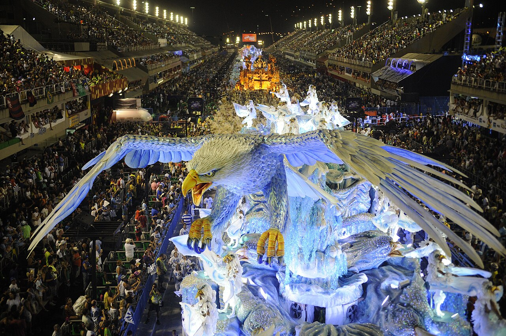

le carnaval de Rio
Le Carnaval de Rio est l'événement touristique le plus important de la municipalité de Rio et la fête nationale la plus populaire au Brésil, en particulier à Rio de Janeiro. Il est devenu un vrai synonyme de la célébration du carnaval dans le pays et même au monde. Il a lieu tous les ans durant les 2 semaines qui précèdent le mercredi des Cendres, qui est le jour qui marque le début du carême. En 2018, le carnaval de Rio s'est tenu du 9 au 14 février, en 2019 du 2 au 9 mars, en 2020 du 21 au 26 février. Les réjouissances commencent après le signal du Rei Momo. À l'occasion du Carnaval, le maire lui transmet les clefs de la ville, l'aidant à trouver sa reine, une jeune fille choisie pour sa beauté et son expérience de la samba. Celle-ci gouvernera la ville durant les trois jours du carnaval[1]. Les origines : de l'entrudo... aux traditions parisiennes Le Carnaval de Paris a une influence décisive sur le Carnaval de Rio. Spécialiste de l'histoire de ce carnaval, Felipe Ferreira, professeur de culture et arts populaires à l'université d'État de Rio de Janeiro écrit à ce propos[3] : « L'idée de mouvement se joint au concept de diversion et influence la manière dont le Parisien occupe son temps libre (après 1830). Le carnaval de la capitale française va incorporer ce concept de déplacement dans les promenades effectuées pendant la période carnavalesque. Et c'est ainsi que se promener à pied ou en voiture sur les grands boulevards, revêtus de costumes élégants, occupera les après-midi froides du carnaval de Paris. C'est ce modèle d'occupation festive des rues que l'élite carioca décide d'importer et d'adapter au carnaval de Rio de Janeiro. Après leur implantation, les bals masqués sortent peu à peu dans les rues sous forme de mascarades. » Comme l'explique Felipe Ferreira dans son livre L'Invention du Carnaval au XIXe siècle, Paris, Nice, Rio de Janeiro, les bals masqués du Carnaval de Rio ont été importés de Paris en réaction contre les vieilles traditions carnavalesques populaires lusitaniennes de l'entrudo dont la bourgeoisie carioca voulait se débarrasser. Cette importation s'est faite jusque dans les détails des costumes. Comme on peut le voir à la lecture de la Semana Ilustrada, en date du 7 février 1864. Cet hebdomadaire de Rio relève qu'au moment du Carnaval : « Même les dénominations se francisent complètement, et les pierrots, les débardeurs, les zouaves apparaissent dans la société brésilienne comme s'ils avaient droit de cité. » L'importation des traditions carnavalesques parisiennes à Rio est vue par la bourgeoisie au XIXe siècle comme un élément d'ordre et de civilisation contre le carnaval populaire traditionnel. Français présent à Rio, Richard Cortambert écrit dans L'Illustration en décembre 1868, à propos du Carnaval de Rio et ses traditions[4], : « Pendant que les blancs s'abandonnent aux distractions mondaines ; les nègres se livrent avec une sorte de furie bestiale à tous les excès de la danse. » Les cariocas adopteront par la suite avec enthousiasme la mode des confettis en papier lancée à Paris à partir de décembre 1891. Le Jornal do Commercio du 23 février 1906 rapporte dans sa description du Carnaval de Rio que : « À 10 heures du soir une énorme masse de gens sur l'avenue Central, ont commencé avec enthousiasme à s'adonner au jeu des confetti[5]. »
